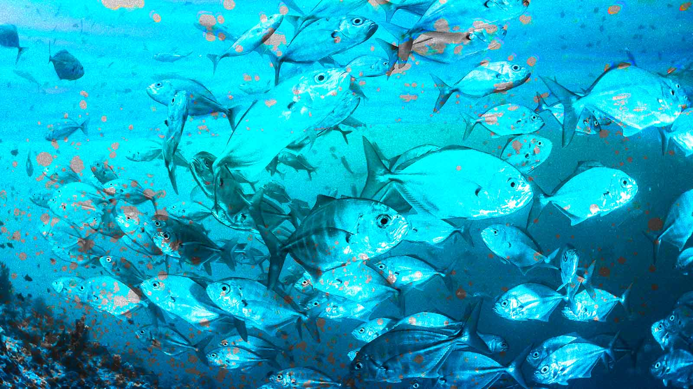

Problemas
A poluição do oceano por microplásticos, fragmentos de plástico menores que 5 mm, que são onipresentes em nossos cursos d'água.
A ingestão de microplásticos causa danos físicos e exposição a toxínas. Eles ameaçam tanto ecossistemas marinhos quanto a saúde humana, na medida que se acumulam na cadeia alimentar.
Origem dos microplásticos no oceano

Nossa Tecnologia
Será criada uma rede de sensores capacitivos hipersensíveis, que vão detectar e mapear os microplásticos utilizando inteligência artificial.
Eles serão instalados em cascos de navios, debaixo de boias de contenção, pedras, e em drones subaquáticos (AUVs)
Bactérias sintéticas (Ideonella sakaiensis), capazes de consumir plástico, descontaminarão a água. Serão utilizados AUVs, que calcularão quantas delas serão necessárias serem liberadas para descontaminar cada amostra de água.


Objetivos
Temos como meta a diminuição dos microplásticos no oceano como geral e realizar a descontaminação total de áreas afetadas.
Nosso principal objetivo é restaurar os ecossistemas ao normal e afetar positivamente a quem depende deles.

Público-alvo
Nosso público-alvo são Prefeituras de cidades costeiras, e ONGs que se interessam pela proteção da vida marinha, com recursos capazes de colocar nossa ideia em prática.
Benefícios
A eliminação dos microplásticos nas costas de uma cidade resulta em um ambiente marinho mais saudável, promove a segurança alimentar, melhora a saúde pública, estimula a economia local e fortalece a conscientização ambiental.
A eliminação dos microplásticos no oceano resulta na proteção da vida marinha, que contribui para a restauração do equilíbrio ecológico de seus ecossistemas. A diminuição da contaminação desses animais torna os riscos de exposição a toxinas menores, tornando esses alimentos mais seguros para o consumo.

Impacto no dia a dia
As comunidades litorâneas deixarão de enfrentar problemas relacionados à insegurança alimentar. Além disso, o turismo local se beneficia diretamente com a proteção e restruturação dos ecossistemas marinhos.
